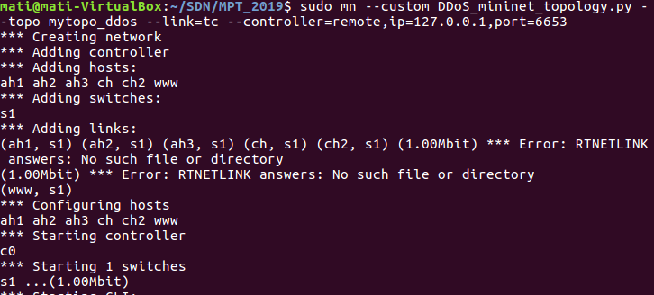

Start
1)Najpierw należało przeprowadzić instalację środowiska a następnie pobrać projekt z repozytorium GitHub.
$ git clone https://github.com/radziop/MPT_2019.git
$ git checkout dev_DDoS
2) Uruchomiono środowisko Eclipse i utworzono nowy "Workspace". Zaimportowano projekt.
-File --> Import --> General --> Existing Projects into Workspace-Następnie w Select root directory należało wybrać katalog w którym zapisano pobrany projekt.
-W oknie Projects zaznaczano Floodlight
-Po przyciśnięciu klawisza "Finish", projekt został zaimportowany
3)Następnie zbudowano i uruchomiono projekt w srodowisku Eclipse
-Z menu wybrano Run--> Run Configurations-Prawym przyciskiem myszy wybrano Java Application --> New
-W polu nazwy wpisano FloodlightLaunch
-W polu Project wybrano Floodlight
-W polu Main Class wybrano net.floodlightcontroller.core.Main
-Apply i Run
Topologia
"""Topology
One switch, host acting as WWW server, one client host and one DoS attacker host :
WWW --- switch --- host --- host
--- attacker --- attacker --- attacker
to run topology:
sudo mn --custom DDoS_mininet_topology.py --topo mytopo_ddos --link=tc --controller=remote,ip=127.0.0.1,port=6653
"""
from mininet.topo import Topo
class MyTopo_ddos(Topo):
#"Simple topology example."
def __init__(self):
#"Create custom topo."
# Initialize topology
Topo.__init__(self)
# Add hosts and switches
wwwServer = self.addHost('www') #SERWER WWW
attackerHost1 = self.addHost('ah1') #ATAKUJĄCY 1
attackerHost2 = self.addHost('ah2') #ATAKUJĄCY 2
attackerHost3 = self.addHost('ah3') #ATAKUJĄCY 3
switch = self.addSwitch('s1') #PRZEŁĄCZNIK
clientHost1 = self.addHost('ch') #KLIENT 1
clientHost2 = self.addHost('ch2') #KLIENT 2
# Add links
self.addLink(wwwServer,switch,bw=10) #Połączenie między serwerem WWW a przełącznikiem z ustaloną predkością
self.addLink(attackerHost1,switch) #Połączenie między klientami a przełącznikiem
self.addLink(attackerHost2,switch)
self.addLink(attackerHost3,switch)
self.addLink(clientHost1,switch)
self.addLink(clientHost2,switch)
topos = { 'mytopo_ddos': ( lambda: MyTopo_ddos() ) }
Symulacja
1)Uruchomiono środowisko Mininet ze zdefiniowaną we wcześniejszym punkcie topologią. Wskazano wykorzystanie zewnętrznego kontrolera.
$ sudo mn --custom DDoS_mininet_topology.py --topo mytopo_ddos --link=tc --controller=remote,ip=127.0.0.1,port=6653
2)W tym momencie została zbudowana topologia testowa. 
3)Następnie można zasymulować atak. Włączono konsolę xterm oraz serwer www poprzez włącznie programu Iperf jako serwer
4) Następnie włączono konsolę pozostałych klientów. Wydano polecenia $ xterm #nazwa_węzła#
5) Następnie możemy włączono program Iperf z dużą ilością jednoczesnych połączeń lub Hibernet (https://github.com/All3xJ/Hibernet) - aplikację generujacą dużą ilość jednoczesnych połączeń HTTP to serwera www. Skonfigurowano serwerem poleceniem:
$ python -m SimpleHTTPServer 80
6)W programie Iperf wydano polecenia kolejno na serwerze i na kliencie (25 jednoczesnych połączeń):
$ iperf -s
$ iperf -c -P 25
7)W wyniku działania programu otrzymaliśmy informację na konsoli o usunięciu przepływu.
Definicja zmiennych i klas
Projekt posiada dwie główne klasy napisane w Javie.
1)Pierwsza z nich to PacketAnalyzer.java, gdzie wyciągana jest zawartość otrzymanych pakietów typu PACKET_IN w sieci. Na tej podstawie, zliczono, ile przepływów pochodzi z danego adresu IP (funkcja flowCounter). Napisano funkcję zmniejszającą ten licznik po upływie odpowiedniej ilości czasu (decrementIPCounter).
private int decrementTimer = 40000; //czas w milisekundach, czas do zmniejszenia licznika dla danego przepływu o 1
2) Kolejna klasa to DDOS.java, gdzie napisana jest funkcja dropFlow oraz receive odpowiedzialna za usuwanie danego przepływu. Zlicza ona ilość połączeń w danym przepływie i jeśli osiągnie dany threshold (singleIPTreshold) usuwa przepływ. Dodatkowo zaimplementowano algorytm, który jeśli wykryje atak z wielu klientów to usuwa przepływ, który ma największy licznik połączeń, aż do momentu w którym suma wszystkich połączeń do serwera nie przekracza bezpiecznego progu (allIPTreshold)
Poniżej opis zmiennych w tej klasie:
private int allIPTreshold = 500; //max counter for all flows at a time. When reached, the flow that has the largest counter is being dropped private int singleIPTreshold = 20; //max counter for given flow. When reached, the flow is being dropped private int idle = 120; //in seconds, idleTimeout that will be set for flows destined to be dropped private int hard = 1200; //in seconds, hardTimeout that will be set for flows destined to be dropped